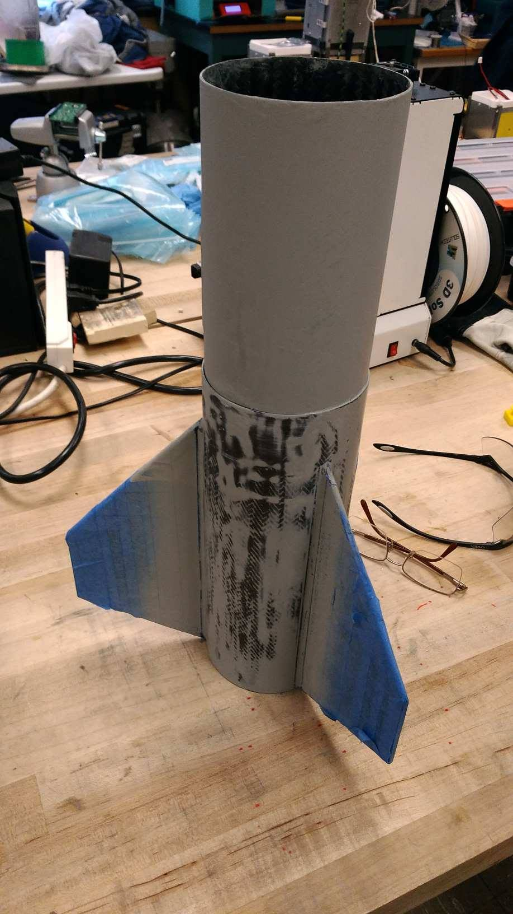
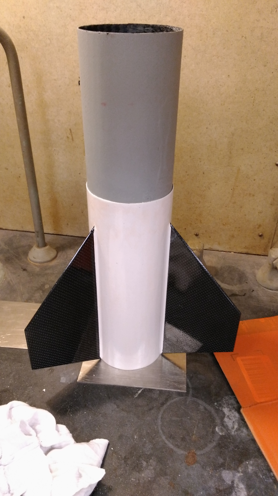
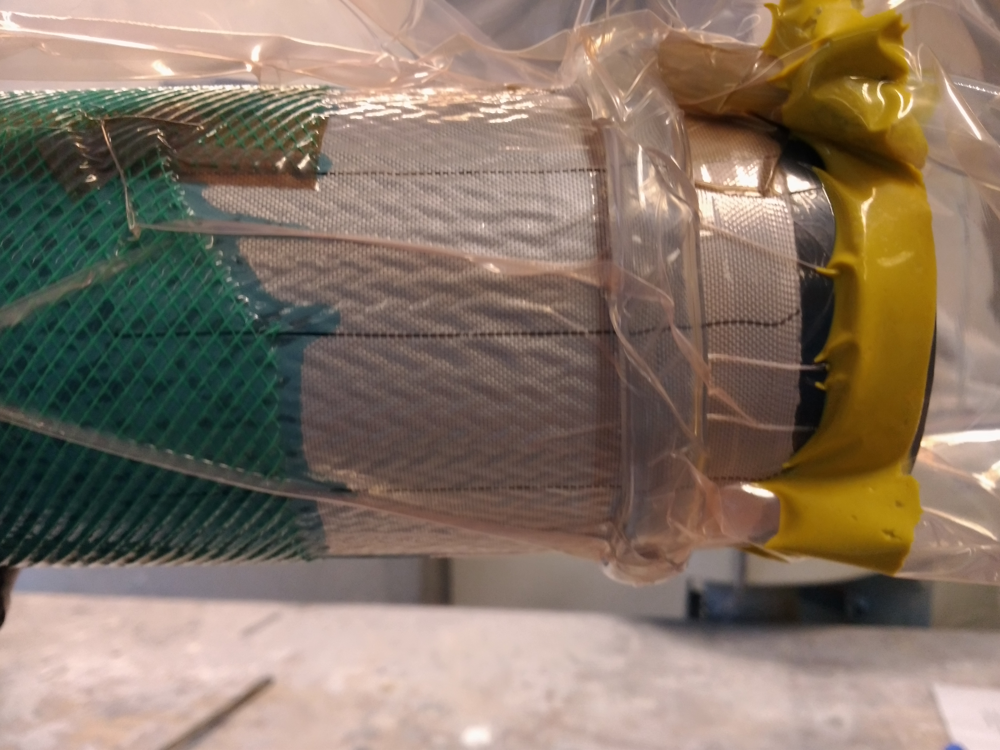

Carbon-Fibre Composites
My first assignment at UBC Rocket was working on the Composites sub-team which produced structures for our 10k and 30k IREC submissions. I helped to manufacture carbon fibre and fibreglass body tubes, couplers, fins, and a nosecone using vacuum resin infusion. I developed a novel technique of using high-strength thread from our recovery team and hose clamps to reduce wrinkles in our lay-ups, and documented the set-up to preserve knowledge. Working with this team was my first introduction to aerospace and I've never looked back!


Here are some closeups of the lay-ups:

